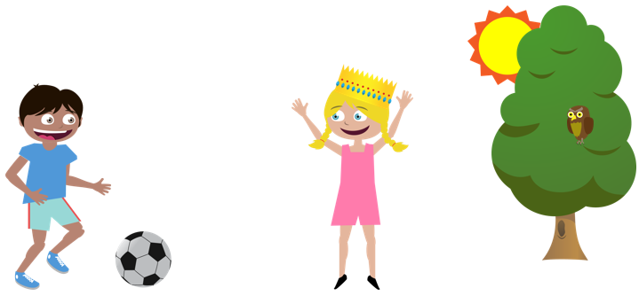
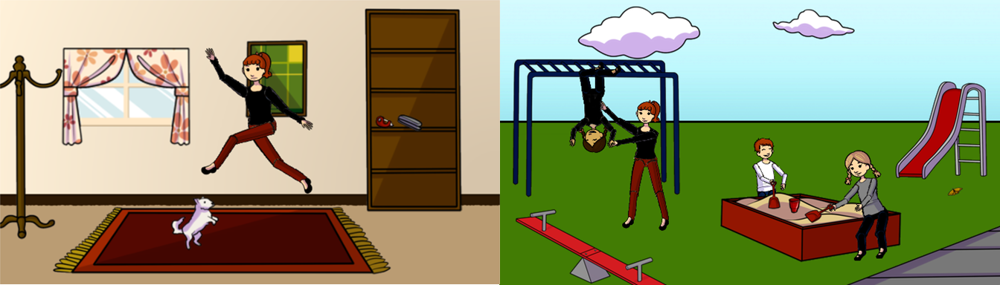
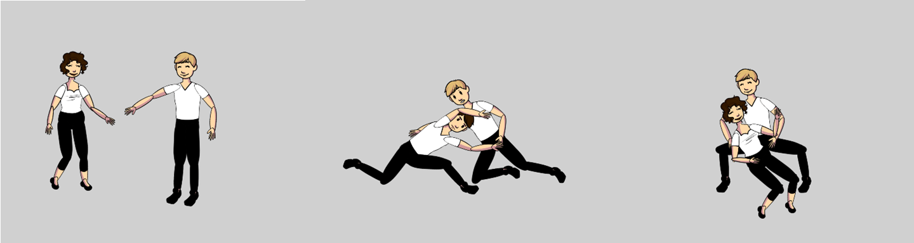

Bringing Semantics Into Focus Using Visual Abstraction
Learning the Visual Interpretation of Sentences

Abstract
Relating visual information to its linguistic semantic meaning remains an open and challenging area of research. The semantic meaning of images depends on the presence of objects, their attributes and their relations to other objects. But precisely characterizing this dependence requires extracting complex visual information from an image, which is in general a difficult and yet unsolved problem. We propose studying semantic information in abstract images created from collections of clipart. Abstract images provide several advantages. They allow for the direct study of how to infer high-level semantic information, since they remove the reliance on noisy low-level object, attribute and relation detectors, or the tedious hand-labeling of images. Importantly, abstract images also allow the ability to generate sets of semantically similar scenes. Finding analogous sets of semantically similar real images would be nearly impossible. We create 1,002 sets of 10 semantically similar abstract scenes with corresponding written descriptions. We thoroughly analyze this dataset to discover semantically important features, the relations of words to visual features and methods for measuring semantic similarity.
Sentences that describe visual scenes contain a wide variety of information pertaining to the presence of objects, their attributes and their spatial relations. We propose learning the visual features that correspond to semantic phrases derived from sentences. Specifically, we extract predicate tuples that contain two nouns and a relation. The relation may take several forms, such as a verb, preposition, adjective or their combination. We model a scene using a Conditional Random Field (CRF) formulation where each node corresponds to an object, and the edges to their relations. We determine the potentials of the CRF using the tuples extracted from the sentences. We generate novel scenes depicting the sentences' visual meaning by sampling from the CRF. The CRF is also used to score a set of scenes for a text-based image retrieval task. Our results show we can generate (retrieve) scenes that convey the desired semantic meaning, even when scenes (queries) are described by multiple sentences. Significant improvement is found over several baseline approaches.
Version 1.1 - Released February 2014
Contains data from both the CVPR 2013 and ICCV 2013 papers.
[Readme] [Download] [Demo Javascript] [Example classes][Average Scenes]
Generating abstract scenes from tuple descriptions
Bringing Semantics Into Focus Using Visual Abstraction
IEEE Conference on Computer Vision and Pattern Recognition (CVPR), 2013 (Oral)
[slides] [CVPR talk (video)][Dataset] [SUN workshop slides] [talk (video) MSR Faculty Summit]
Learning the Visual Interpretation of Sentences
IEEE International Conference on Computer Vision (ICCV), 2013
C. L. Zitnick, D. Parikh, and L. Vanderwende
[Supplementary material] [Dataset] [Scene Generation Code]
Adopting Abstract Images for Semantic Scene Understanding
IEEE Transactions on Pattern Analysis and Machine Intelligence (PAMI), 2015
C. L. Zitnick, R. Vedantam and D. Parikh

Second generation abstract scenes: more realistic, more objects, deformable poses: [GitHub].
A dataset of 50,000 abstract scenes can be downloaded from the "Abstract Scenes" part of the [VQA Dataset]

Abstract scenes that illustrate fine-grained interactions between two people: [Project Webpage].